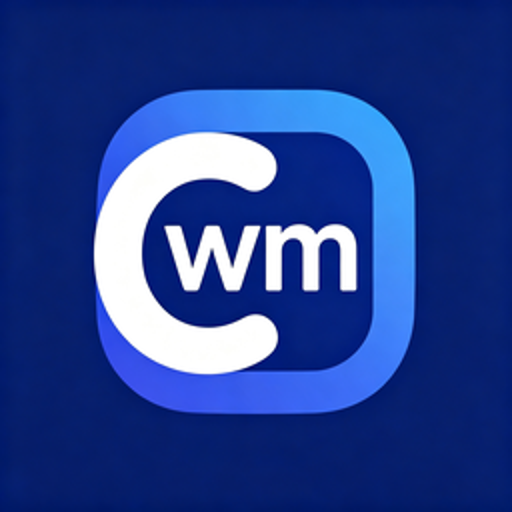

Camera-WaterMark 启动动效方案
都用你的 cwm 图标，纯 HTML/CSS 实现，循环播放供对比。选定后在下方「全屏模拟」看真实启动一次的效果。

CAMERA-WATERMARK
怎么落地到正式 App（三端通用，不影响性能）
1. 在 index.html 最外层放一个启动覆盖层 <div id="splash">，里面是图标 + 上面选中的 CSS 动画；
2. 进度条与光环同步填满（约1.4s）后定格约 0.18s，再整体柔和淡出（约0.45s）后移除；
3. 动画只用 transform / opacity（GPU 合成，不触发布局重排），老手机也不掉帧；
4. PWA 还可另配 iOS 静态启动图 apple-touch-startup-image（点开图标到网页加载之间那张），与这个进入后的动效互补；安卓/Windows 直接复用同一层。
告诉我选哪个（或想组合，比如“④的柔光 + ①的干净退出”），我再把它正式写进内核并重打包。